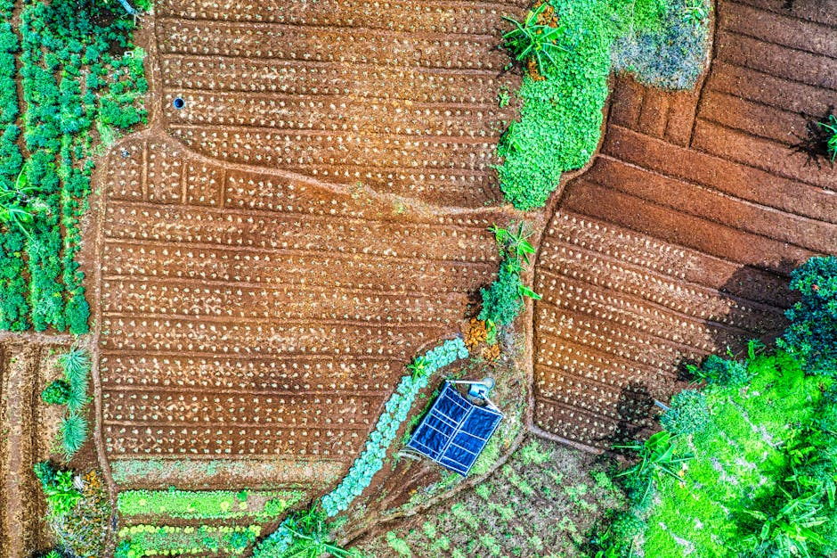

Data-enabled climate shock absorbance through agroforestry (Agrof4resilience)

The Agrof4Resilience geospatial datasets are open-access utilized by artificial intelligence (AI) and machine learning (ML) algorithms that are aimed at creating more robust, productive, resilient and diverse agro-ecological systems to achieve productive agro-ecosystems that have potential to improve resilience over time. This is crucial especially in dryland which are plagued with land degredation and other effects of climate change. The data demonstrates that agroforestry in Kenya is fairly low while models developed from the data indicate high agroforestry potential in Kenya. This is affected by socioeconomic factors such as education levels, occupation, age, landsize, income, gender, marital status, cultural beliefs, and family size. These datasets could be utilized to demostrate regions and practices that are environementally and socio-economically sound. This could provide insights on practices that could enhance livelihoods and promote environmental resilience in target communities across Kenya. The data was collected from 35 out of 47 counties in Kenya, spread across four predetermined transects that cover four main agro-ecological zones, and stored in a freely accessible database within icipe’s servers.
Data characteristics
This geospatial datasets comprises both land use/landcover (LULC) data, plot sampling and socio-economic data from 35 out of 47 counties in Kenya spread across four main agroclimatic zones in Kenya. It contains machine learning-ready data of 2,391 LULC points and polygones of the collected LULC classes, that show the different land uses across Kenya. It also contains a total of a total of 8,194 plant location (gps) points of individual tagged plants collected from a total of 224 1-ha plots from 35 counties in Kenya. Information on the species identification, diameter at breast height (DBH), height, and canopy size is provided. In addition, socio-economic data from 46 focused group discussions with over 44% women and 18% youth conducted within the 35 counties is provided and clearly labeled, detailing agroforestry systems (AFSs) preferences, gender roles, and youth participation in agroforestry systems (AFSs).
Model characteristics
[Auto-enriched from linked project resources]
Processed Data: Open-access geospatial datasets covering 35 of 47 Kenyan counties, sampled across 200+ hectares. Over 20,000 land use points and over 15,000 individual plant samples. Key Variables: plant species identification, height, diameter at breast height (DBH), photographs, GPS locations. Dataset layers: land use points, land use polygons, plot sample points, plot sample polygons, study area, water lines. Format: Shapefile (.shp, .shx, .dbf, .prj, .cpg, .qmd). License: CC BY-NC 2.0. PI: Elfatih Abdel-Rahman. Funded by: Lacuna Fund through MERIDIAN Institute. Project duration: May 2024 - July 2025.
Source: https://dmmg.icipe.org/dataportal/dataset/data-enabled-climate-shock-absorbance-and-ecosystem-resilience
How to use
The database provides information on tree/plant-level, plot-level and landscape scale across Kenya. Measurements such as DBH, tree height, canopy size and tree identification have been provided. In addition, socio-economic data such as agroforestry systems (AFSs) preferences, gender roles, and youth participation in AFSs are also provided. The datasets are readily and freely available to users who can integrate it to AI and ML algorithms and models as ground-truth data to train and/or validate the models associated and/or related to agroforestry and carbon sequestration across Kenya. The models developed using the Agrof4Resilience data could utilize and take advantage of satellite data from various sources that are both freely available or with commercial licences.
Datasets
About
Powered by / Provided by: International Center of Insect Physiology and Ecology (ICIPE)
Catalyzed by: Lacuna-Fund / Meridian (Climate-call) & FAIR Forward - AI for All, GIZ
Financed by: BMZ
Contact: International Center of Insect Physiology and Ecology ICIPE (dg@icipe.org)